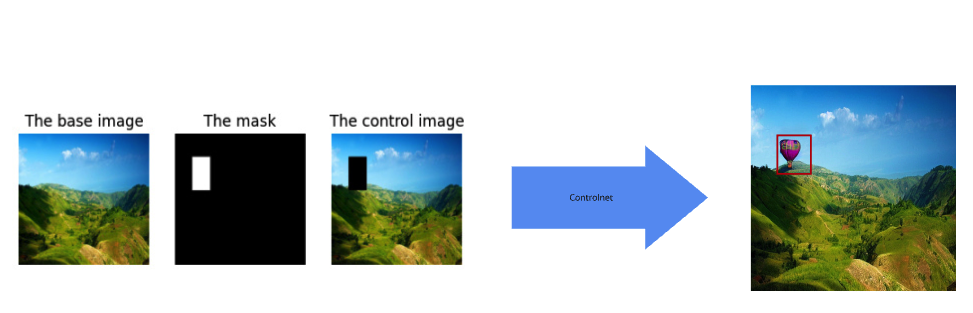
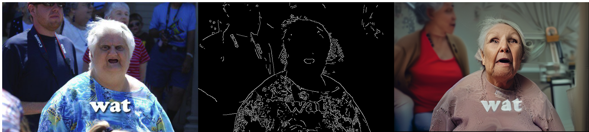
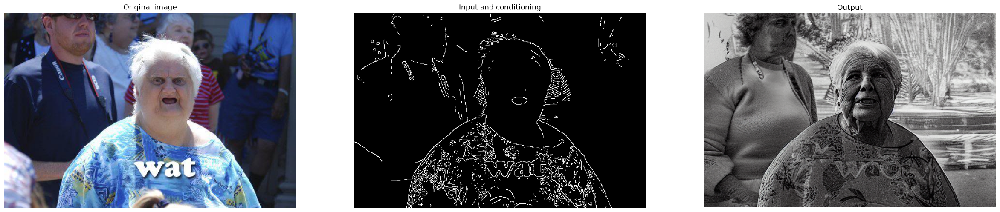
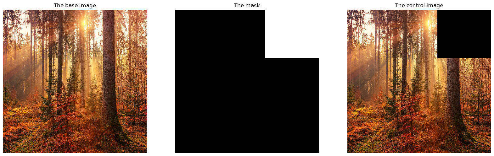
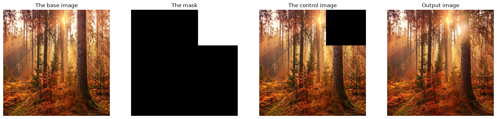
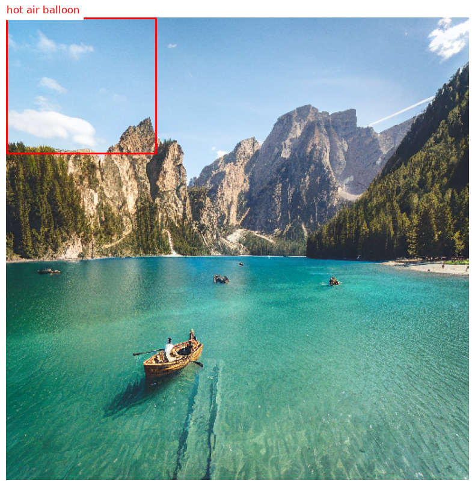

# import the required libraries
import PIL
from PIL import Image, ImageDraw
import cv2
import numpy as np
import random
import os
import datetime
import torch
from diffusers import StableDiffusionControlNetInpaintPipeline, ControlNetModel, UniPCMultistepScheduler, DDIMScheduler, StableDiffusionControlNetPipeline
from diffusers.utils import load_image
from datasets import load_dataset
import pycocotools
import pycocotools.mask
from pycocotools.coco import COCO
import matplotlib.pyplot as plt
import json
import matplotlib.patches as patchesWhat to diffuse? Free COCO annotations!
diffusion models
Using ControlNet inpainting to generate a free, fully-annotated synthetic COCO dataset with Stable Diffusion.

 |
|---|
<p style="font-size: 20px; font-family: 'Georgia'; line-height: 1.5em;">
Training deep learning models requires labelled data, and labelling data is expensive. So why don’t we use diffusion models to generate this data for free? This is what this tutorial is all about, <strong><u>generating free coco annotations using controlnet</u></strong>, an opensource model available on hugging face. To sumarise, in this notebook I will;
- Explain some of the theory behind Controlnet from the paper. Adding Conditional Control to Text-to-Image Diffusion Models
- Import the controlnet implementation from 🤗Hugginface
- Contition it with simple edges to show how you can work with controlnet.
- Show some examples of the dataset we use as background dataset.
- Explain how we make the masks and condition the diffusion process.
- Generate the data.
- And stores this data in the coco format, such that one can use it to train object detection models.
 |
|---|
A vanilla diffusion model can generates images by consecutively adding features to noise, starting in the beginning with courser features and sequentially moving to more fine-grained that correspond to details. This is similar how a human being paints, it starts with the rough edges and then consecutively adds details until the painting is finished. Except that a human painter wouldn’t start with gaussian noise, but with a white canvas. For a statistical model, white gaussian noise is the equivalent to an empty canvas.
How does this work?
As already mentioned before, a diffusion model uses the assumption that images can be constructed and destructed in a stochastic process by sequentially adding or removing noise. That destructive process (the forward process) is the easy part, since you can easily show that by starting with an image and just adding noise. During training a model is trained to reverse this process, hence a the reverse process is often called denoising. Then, after training this model is used to generate a sample beginning with white Gaussian noise.
Control net
Controlnet is a diffusion model that employs a specific architecture that enables a more fine-grained type of control to its output, it simply allows users to add a certain pattern to its input and therefor sets specific conditions on its output. This allows us to use it to easily generate data with a specific set of conditions. These visual conditions can be edges, masks or just prompts. One example is conditioning an image on a edges, in the image you can see how that works for edges. Easy because often these visual conditions/constrains are easier to generate procedurally then generate a picture. Which is exactly how we will generate a labelled dataset of flying things, without labelling ourselves. That is, we will first generate visual conditionings of objects (masks), and then use control net to inpatient these specific objects into images with random backgrounds. In this way we just derive the bounding boxes and annotations from the masks that we used in the first place.
How does one get a controlnet?
Controlnet is not a model trained from scratch, but it is a technique that adds a specific block to a previously trained diffusion model. That block can be any learned computational block. In the case of Stable Diffusion this is a convolution block with attention. This allows you to just fine-tune with relatively ease a model like stable-diffusion on a consumer grade GPU, like the P100 which are available on kaggle.
 |
|---|
| From: github of lllyasviel |
Some available Controlnets
- Text-to-image, except for getting an text-prompt to guide the diffusion process, this model also accepts an image with edges and has learned how to “fill in” the rest of the image. The image above shows this mode, and the code used to do this is given below.
- Image-to-image, a controlnet-model trained for this tasks accepts not just a prompt but also an initial image that it uses for “inspiration” to generate a new image. A depth map could be an example.
- Inpainting, this is the mode that we will use to make our syntethic data. This mode requires a base image, a mask and a control image.
# Set the variables
img_h = 512
img_w = 512
background_dataset = load_dataset("Tzechung/landscapephotos")["train"]
output_dir = "~/data/synthetic-flying-things/"
batch_size = 1
n_batches = 10 # Just to show how it works
inference_steps = 50
classes = ['bird', 'hot air balloon', 'helicopter', 'mosquito', 'wasp']
os.makedirs(name=output_dir, exist_ok=True)
os.makedirs(name=output_dir + "images", exist_ok=True)
low_threshold = 250
high_threshold = 300def generate_random_msk_np(size: tuple[int, int]) -> np.ndarray:
"""
Generate a binary mask for a given fruit shape.
Parameters:
- shape_type (str): The type of fruit shape to generate.a
- size (tuple[int, int]): The size of the image (width, height).
Returns:
- np.ndarray: A binary mask where the shape is represented by True values.
"""
cx, cy = random.randint(10, int(size[0]-10)), random.randint(10, int(size[1]*0.4))
mask = Image.new('L', size, 0)
draw = ImageDraw.Draw(mask)
width = random.randint(int(size[0]*0.4), int(size[0]*0.5))
height = random.randint(int(size[1]*0.4), int(size[1]*0.5))
draw.rectangle([cx-width//2, cy-height//2, cx+width//2, cy+height//2], fill=255)
return np.array(mask) == 255def get_base_coco_dict() -> dict:
return {
"info": {
"description": "Synthetic flying things dataset, the background (landscape images) are sourced from the Hugging Face dataset https://huggingface.co/datasets/Tzechung/landscapephotos. The model used to generate (https://huggingface.co/lllyasviel/control_v11p_sd15_inpaint) is licensed under OpenRAIL.",
"version": "1.0",
"year": datetime.datetime.now().year,
"contributor": "Koen Botermans",
"date_created": datetime.datetime.now().strftime("%Y-%m-%d %H:%M:%S")
},
"licenses": [],
"images": [],
"annotations": [],
"categories": [
{"id": 1, "name": "bird", "supercategory": "shape"},
{"id": 2, "name": "hot air balloon", "supercategory": "shape"},
{"id": 3, "name": "helicopter", "supercategory": "shape"},
{"id": 4, "name": "mosquito", "supercategory": "shape"},
{"id": 5, "name": "wasp", "supercategory": "shape"},
]}
coco_data = get_base_coco_dict()
coco_name_to_id = {cat["name"]: cat["id"] for cat in coco_data["categories"]}def get_random_background() -> PIL.Image.Image:
idx = int(np.random.randint(len(background_dataset)))
return background_dataset[idx]["image"]def make_inpaint_condition(img_np: np.ndarray, msk_np: np.ndarray) -> torch.Tensor:
img_np = img_np.copy().astype(np.float32) / 255.0
msk_np = msk_np.astype(np.float32)
img_np[msk_np * 1.0 > 0.5] = -1.0
return img_npdef get_inputs(img_h: int, img_w: int, random_dir: bool = True) -> dict[str, np.ndarray]:
if random_dir:
background_img = get_random_background()
else:
background_img = background_dataset[0]["image"]
base_img = np.array(background_img.convert("RGB"))
cls_msk_np = generate_random_msk_np(size=(img_h, img_w))
img_np = cv2.resize(base_img, (img_h, img_w), cv2.INTER_LINEAR)
cnt_img_np = make_inpaint_condition(img_np=img_np.copy(), msk_np=cls_msk_np)
return {
"base_img_np": img_np,
"cls_msk_np": cls_msk_np,
"cnt_img_np": cnt_img_np,
}def msk_np_to_box(msk_np: np.ndarray) -> list[int]:
"""Given a msk_np, returns a bounding box in the coco format.
COCO format = Coco/Pixel format: [x_min, y_min, width, height]
"""
y, x = np.where(msk_np)
x_min = x.min()
x_max = x.max()
y_max = y.max()
y_min = y.min()
return [int(x_min), int(y_min), int(x_max-x_min), int(y_max-y_min)]def get_coco_ann(ann_id: int, img_id: int, cat_id: int, msk_np: np.ndarray) -> dict[str, str | dict[str, tuple[int] | str]]:
box_np = msk_np_to_box(msk_np=msk_np)
return {
"id": int(ann_id),
"image_id": int(img_id),
"category_id": int(cat_id),
"area": int(box_np[2] * box_np[3]),
"bbox": box_np,
"iscrowd": int(0),
}def plot_inputs_dict(inputs_dict: dict[str, np.ndarray]) -> None:
fig, axs = plt.subplots(1, 3, figsize=(20, 10))
axs[0].imshow(inputs_dict["base_img_np"])
axs[1].imshow(inputs_dict["cls_msk_np"][..., np.newaxis] * 255, cmap="gray")
axs[2].imshow(inputs_dict["cnt_img_np"])
axs[0].set_title("The base image")
axs[1].set_title("The mask")
axs[2].set_title("The control image")
_ = [ax.axis("off") for ax in axs.flatten()]def plot_inputs_dict_output(inputs_dict: dict[str, np.ndarray], output) -> None:
fig, axs = plt.subplots(1, 4, figsize=(20, 10))
axs[0].imshow(inputs_dict["base_img_np"])
axs[1].imshow(inputs_dict["cls_msk_np"][..., np.newaxis] * 255, cmap="gray")
axs[2].imshow(inputs_dict["cnt_img_np"])
axs[3].imshow(np.array(output))
axs[0].set_title("The base image")
axs[1].set_title("The mask")
axs[2].set_title("The control image")
axs[3].set_title("Output image")
_ = [ax.axis("off") for ax in axs.flatten()]def get_coco_img_ann(img_id: int, file_name: str, img_w: int, img_h: int) -> dict[str, int | str | float]:
return {
"id": int(img_id),
"file_name": f"{output_dir}/images/img_{img_id}.png",
"width": int(img_w),
"height": int(img_h),
"date_captured": str(datetime.datetime.now().strftime("%Y-%m-%d %H:%M:%S")),
}def get_batch_inputs(batch_size: int) -> list[list[str, np.ndarray, np.ndarray, np.ndarray]]:
batch_base_img_np = []
batch_cls_msk_np = []
batch_cnt_img_np = []
batch_cls_names = []
for _ in range(batch_size):
class_name = np.random.choice(classes)
batch_cls_names.append(class_name)
inputs_dict = get_inputs( img_h=img_h, img_w=img_w)
batch_base_img_np.append(inputs_dict["base_img_np"]/255)
batch_cls_msk_np.append(inputs_dict["cls_msk_np"] * 1.0)
batch_cnt_img_np.append(inputs_dict["cnt_img_np"])
return batch_base_img_np, batch_cls_msk_np, batch_cnt_img_np, batch_cls_namesdef get_batch_outputs(batch_base_img_np, batch_cls_msk_np, batch_cls_img_np, batch_cls_names) -> list:
return pipe(
[f"A photograph of a detailed {class_name} flying, extremely realistic, highly detailed, sharp focuss" for class_name in batch_cls_names],
negative_prompt=[f"Blurry, distorted, cartoonish"]* batch_size,
num_inference_steps=inference_steps,
eta=1.0,
image=np.stack(batch_base_img_np),
mask_image=np.stack(batch_cls_msk_np)[..., np.newaxis]* 1.0,
control_image=np.stack(batch_cls_img_np),
).imagesdef plot_image_with_bboxes(coco: COCO, img_id: int, cat_ids=[1, 2, 3, 4, 5]):
img_info = coco.loadImgs(img_id)[0]
img_path = img_info['file_name']
image = Image.open(img_path)
# Get annotations for the image
ann_ids = coco.getAnnIds(imgIds=img_id, catIds=cat_ids, iscrowd=None)
anns = coco.loadAnns(ann_ids)
# Plot the image
plt.figure(figsize=(10, 10))
plt.imshow(image)
ax = plt.gca()
for ann in anns:
bbox = ann['bbox']
x, y, w, h = bbox
rect = patches.Rectangle((x, y), w, h, linewidth=2, edgecolor='r', facecolor='none')
ax.add_patch(rect)
cat_id = ann['category_id']
cat_name = coco.loadCats(cat_id)[0]['name']
ax.text(x, y - 5, cat_name, color='red', fontsize=12, backgroundcolor='white')
plt.axis('off')
plt.show()def plot_edge_example(original_image, canny_image, output) -> None:
fig, axs = plt.subplots(1, 3, figsize=(30, 10))
axs[0].imshow(np.array(original_image))
axs[1].imshow(np.array(canny_image))
axs[2].imshow(np.array(output))
axs[0].set_title("Original image")
axs[1].set_title("Input and conditioning")
axs[2].set_title("Output")
_ = [ax.axis("off") for ax in axs]def convert_to_python_types(obj):
if isinstance(obj, np.integer):
return np.int(obj)
elif isinstance(obj, np.floating):
return float(obj)
elif isinstance(obj, np.ndarray):
return obj.tolist()
return objdef plot_background_images() -> None:
fig, axs = plt.subplots(1, 5, figsize=(30, 10))
for ax, sample in zip(axs, background_dataset.select(range(5))):
ax.imshow(sample["image"])
_ = [ax.axis("off") for ax in axs]def get_canny_edge(image, low_threshold: int, high_threshold: int) -> PIL.Image:
image = np.array(original_image)
image = cv2.Canny(image, low_threshold, high_threshold)
image = image[:, :, None]
image = np.concatenate([image, image, image], axis=2)
return Image.fromarray(image)This is the most basic controlnet. Where one simply adds an image with edges as “base” image. To get the results bewow one can simply download the lllyasviel/sd-controlnet-canny with its weight using and add that to a StableDiffusionControlNetPipeline that has as base model the stable-diffusion-v1-5/stable-diffusion-v1-5.
As you can see I simply; 1. Download an image using the load_image function. 2. Derive the edges using the cv2.Canny. 3. Download the weights for contornet and for stable-diffusion. 4. Let the model do its job.
# 1. load an image.
original_image = load_image(
"https://i.kym-cdn.com/photos/images/original/000/173/576/Wat8.jpg"
)
# 2. Derive the edges
canny_image = get_canny_edge(image=original_image, low_threshold=low_threshold, high_threshold=high_threshold)
# 3. Download the weights for contornet and the base model (stable-diffusion)
controlnet = ControlNetModel.from_pretrained("lllyasviel/sd-controlnet-canny", torch_dtype=torch.float16, use_safetensors=True)/home/koenbotermans/projects/website/.venv/lib/python3.14/site-packages/huggingface_hub/utils/_validators.py:205: UserWarning: The `local_dir_use_symlinks` argument is deprecated and ignored in `hf_hub_download`. Downloading to a local directory does not use symlinks anymore.
warnings.warn(
pipe = StableDiffusionControlNetPipeline.from_pretrained(
"stable-diffusion-v1-5/stable-diffusion-v1-5",
controlnet=controlnet,
torch_dtype=torch.float16,
use_safetensors=True
)
pipe.scheduler = UniPCMultistepScheduler.from_config(pipe.scheduler.config)
pipe.enable_model_cpu_offload()
# 4. Let the model do its job.
canny_output = pipe(
"A grandmother being completely flabbergasted, looking at something in the distance",
image=canny_image
).images[0]plot_edge_example(original_image, canny_image, canny_output) 
To generate an annotated coco dataset you need the following;
- The correct controlnet and stable diffusion weights from huggingface.
- A background dataset. As mentioned above, controlnet that inpaints needs a base image which in which it can inpaint something.
- Generate prompts and a conditioning.
- Prompts: those are straightforward, it will just be the class name of the object we want to inpaint followed with a basic extension.
- The conditioning, since we want to generate coco data we need to generate the conditioning in such a way that we can derive annotations from these masks. We will be doing this by simply generating a random box as conditioning, from which we can derive the bounding boxes. This is done in the functions
make_inpaint_conditionandmsk_np_to_box. Except for a mask, controlnet also needs as input a control image. This is an image which is the same as the base image, except that it is set to the value of-1on place where the model should inpaint.
For this task we use the lllyasviel/control_v11p_sd15_inpaint model and use the StableDiffusionControlNetInpaintPipeline that has, again, uses as base model stable-diffusion-v1-5/stable-diffusion-v1-5.
controlnet = ControlNetModel.from_pretrained("lllyasviel/control_v11p_sd15_inpaint", torch_dtype=torch.float16, use_safetensors=True)
pipe = StableDiffusionControlNetInpaintPipeline.from_pretrained(
"stable-diffusion-v1-5/stable-diffusion-v1-5",
controlnet=controlnet,
torch_dtype=torch.float16,
use_safetensors=True
)
pipe.scheduler = DDIMScheduler.from_config(pipe.scheduler.config)
pipe.enable_model_cpu_offload()Background dataset
The dataset I use for background images is Tzechung/landscapephotos from the Hugging Face Hub. For each sample that I generate I simply sample one of these images and inpaint. I use a landscape dataset because I am planning to inpaint things that fly, and I have noticed that general images from landscapes work better then for example indoor images.
plot_background_images()Prompts and the conditioning
We will be inpainting images into the background flying things which can be one of the following things:
['bird', 'hot air balloon', 'helicopter', 'mosquito', 'wasp']
A string of these class names I insert into the following prompt: A big {class_name} flying, extremely realistic, normal in its environment.
Except for the prompt, the input of an inpainting-controlnet contains out of;
- The base image, which is the model tries to inpaint something in. This is the starting point of the
- The mask, which is tells the model where to inpaint the prompt into. I will randomly generate masks in the shape of boxes, such that I can derive bounding boxes (the annotations) from these mask.
- The control image, which provides guidance to the diffusion model during the generation process.
class_name = "hot air balloon"
inputs_dict = get_inputs(img_h, img_w, random_dir=True)
plot_inputs_dict(inputs_dict)Clipping input data to the valid range for imshow with RGB data ([0..1] for floats or [0..255] for integers). Got range [-1.0..1.0].
Example one image.
This is how you generate on image, as you can see the model takes as input the base_image, the control_image and the mask_image.
output = pipe(
[f"A photograph of a detailed {class_name} flying, extremely realistic, highly detailed, sharp focuss"],
negative_prompt=[f"Blurry, distorted, cartoonish"],
num_inference_steps=100,
image=[inputs_dict["base_img_np"]/255.0],
mask_image=[inputs_dict["cls_msk_np"] * 1.0],
control_image=[inputs_dict["cnt_img_np"]],
num_images_per_prompt=1,
guidance_scale=5.0
).imagesplot_inputs_dict_output(inputs_dict, output[0])Clipping input data to the valid range for imshow with RGB data ([0..1] for floats or [0..255] for integers). Got range [-1.0..1.0].
Generating the complete coco dataset.
This is where I generate the complete coco dataset, as you can see I just randomly fetch base image and randomly generate masks and control images, then generate the images and derive annotations from them. During this loop I keep track of all my annotations and write the generated images to disk.
all_coco_annotations = []
coco_annotation_data = get_base_coco_dict()
img_id = 0
ann_id = 0
for batch_id in range(n_batches):
batch_base_img_np, batch_cls_msk_np, batch_cls_img_np, batch_cls_names = get_batch_inputs(batch_size=batch_size)
output = get_batch_outputs(batch_base_img_np, batch_cls_msk_np, batch_cls_img_np, batch_cls_names)
for i, img in enumerate(output):
img_file_name = f"{output_dir}images/img_{img_id}.png"
cv2.imwrite(img_file_name, np.array(img)[..., ::-1], )
coco_annotation_data["annotations"].append(
get_coco_ann(
ann_id=ann_id,
img_id=img_id,
cat_id=coco_name_to_id[batch_cls_names[i]],
msk_np=batch_cls_msk_np[i],
)
)
coco_annotation_data["images"].append(
get_coco_img_ann(
img_id=img_id,
file_name=img_file_name,
img_w=img_w,
img_h=img_h
)
)
img_id += 1
ann_id += 1Check the coco dataset and annotations.
So after how do our images look like?
coco_annotation_data = {k: convert_to_python_types(v) for k, v in coco_annotation_data.items()}
with open(output_dir + "annotations.json", "w") as file:
json.dump(coco_annotation_data, file)
coco_gt = COCO("~/data/synthetic-flying-things/annotations.json")loading annotations into memory...
Done (t=0.00s)
creating index...
index created!coco_gt = COCO("~/data/synthetic-flying-things/annotations.json")loading annotations into memory...
Done (t=0.00s)
creating index...
index created!plot_image_with_bboxes(coco=coco_gt, img_id=0)
import argparse
from pathlib import Path
from datasets import Dataset, Features, Value, Sequence, ClassLabel, Image
from huggingface_hub import HfApi
from pycocotools.coco import COCO
def load_coco_as_hf_dataset(annotations_path: Path) -> Dataset:
annotations_path = Path(annotations_path)
coco = COCO(str(annotations_path))
category_ids = sorted(coco.getCatIds())
category_names = [coco.cats[cid]["name"] for cid in category_ids]
cat_id_to_label = {cid: i for i, cid in enumerate(category_ids)}
features = Features(
{
"image": Image(),
"image_id": Value("int64"),
"width": Value("int64"),
"height": Value("int64"),
"objects": Sequence(
{
"bbox": Sequence(Value("float32"), length=4),
"category": ClassLabel(names=category_names),
"area": Value("float32"),
"iscrowd": Value("int64"),
}
),
}
)
def generate_examples():
for image_id in coco.getImgIds():
img_info = coco.imgs[image_id]
# img_info["file_name"] is already a full path relative to cwd
# (it was written verbatim from `output_dir`-prefixed paths during
# generation), so it's used as-is here.
image_path = Path(img_info["file_name"])
ann_ids = coco.getAnnIds(imgIds=image_id)
anns = coco.loadAnns(ann_ids)
yield {
"image": str(image_path),
"image_id": image_id,
"width": img_info["width"],
"height": img_info["height"],
"objects": [
{
"bbox": ann["bbox"],
"category": cat_id_to_label[ann["category_id"]],
"area": ann["area"],
"iscrowd": ann.get("iscrowd", 0),
}
for ann in anns
],
}
return Dataset.from_generator(generate_examples, features=features)# dataset = load_coco_as_hf_dataset("~/data/synthetic-flying-things/annotations.json")
# dataset.push_to_hub("your-username/your-dataset-name")